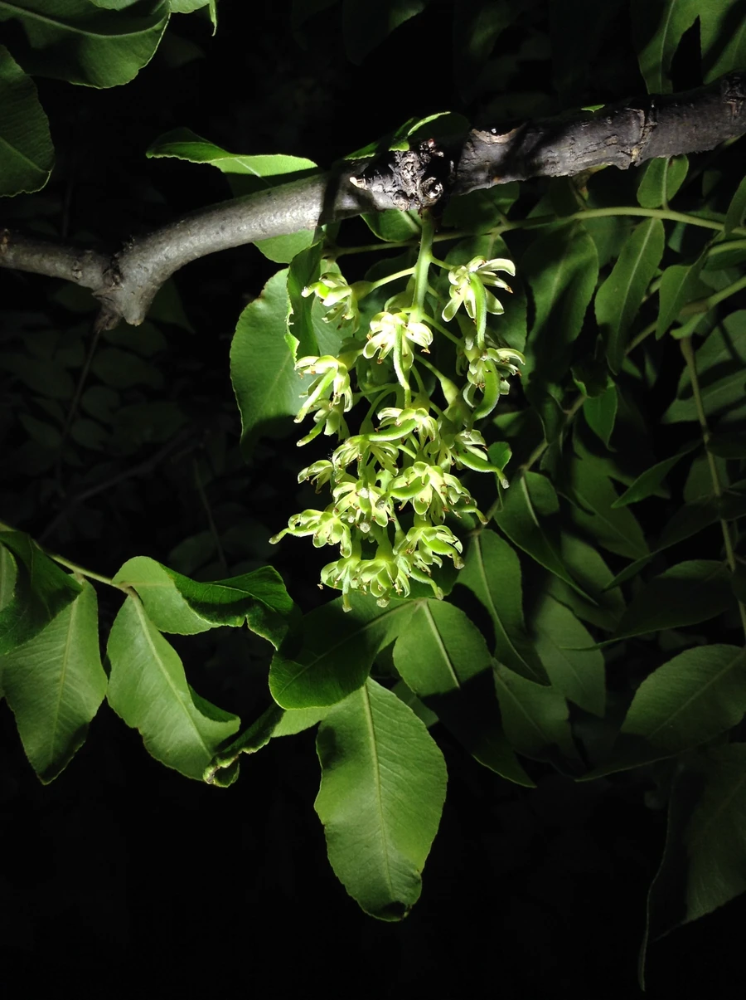

乔木 · 植物界
皂荚 Gleditsia sinensis

中国特有的落叶乔木，荚果富含皂素、可代肥皂洗涤，木材坚硬，是传统的乡土经济树种，荚果还可入药。
- 分类
- 门被子植物门纲木兰纲目豆目科豆科属皂荚属
- 栖息环境
- 海拔 1500 米以下的村旁、路旁与山坡，喜光耐寒耐旱
- 地理分布
- 中国华北、华东、华中及西南地区，为中国特有树种
- 保护级别
- 暂无评估；中国未列入国家重点保护野生植物名录
物种志
皂荚为落叶乔木，高可达 25 m，树皮灰褐色、纵裂；枝条具粗壮的圆锥形刺；偶数羽状复叶，小叶 3–8 对，卵形至椭圆形。花期 4–5 月，总状花序腋生，花黄绿色；荚果带状、扁平，长 12–30 cm，成熟时黑褐色，表面被白色粉霜，内含多数种子。
皂荚分布于中国华北、华东、华中及西南地区，喜光、耐寒、耐旱，适应性强，常生于村旁、路旁与山坡，寿命可达数百年。荚果富含皂素，古人用来洗衣、洗头，是天然的洗涤剂；荚果、刺与种子可入药，有祛痰开窍之效；木材坚硬、耐腐，可供家具与农具用。皂荚树形高大、寿命长，是北方农村常见的乡土树种，也是四旁绿化的优良树种。
形态与习性
- 株高可达 25 m，枝条具刺
- 花期4–5 月，总状花序腋生
- 果期10 月，荚果带状扁平
- 光照喜光，不耐长期荫蔽
- 水分耐旱，怕积水
- 主要用途天然洗涤剂、荚果与刺入药、家具农具用材
趣味知识
- 皂荚的荚果富含皂素，古人用它洗衣洗头，是天然的洗涤剂。
- 皂荚的枝条上长有粗壮的圆锥形刺，是辨认它的特征之一。
- 皂荚寿命可达数百年，是北方农村常见的乡土树种。